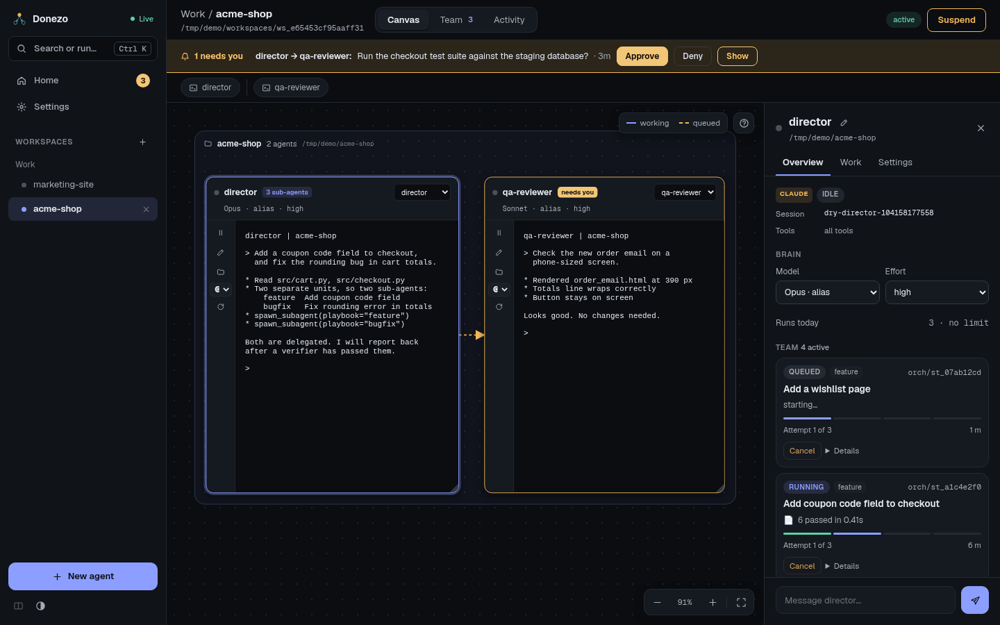
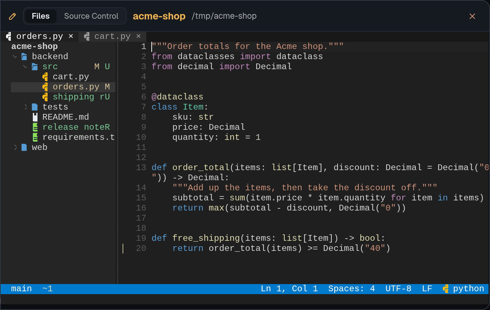
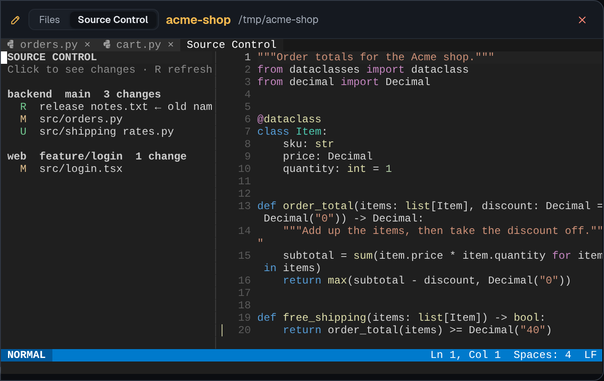
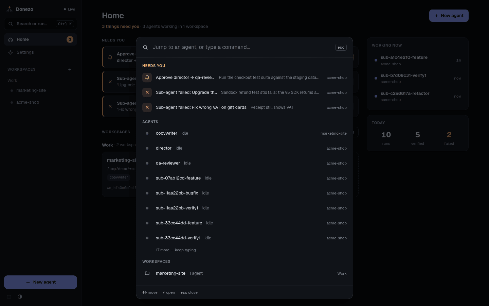

Agents
Where your agents live, how you work with them, and how they pass work to each other.
Workspaces and groups
A workspace is a set of agents that can message each other. Agents in different workspaces cannot, unless you move one across. A group is only a label that keeps workspaces tidy, such as "work" and "hobby".
- Create: New workspace and New group are on Home. The Workspaces heading in the sidebar has a plus button too.
- Open: click a workspace in the sidebar or on Home.
- Side by side: open two workspaces, then press the split button at the bottom of the sidebar (its tooltip reads Side-by-side (needs 2 open workspaces)). At most two are open at once; opening a third replaces the one you are viewing.
- Rename or delete: use the pencil and trash buttons on a card on Home. Deleting a workspace unregisters its agents. It keeps runs, messages and records, and leaves the folder on disk alone. Deleting a group only moves its workspaces back to the default group.
The canvas
The Canvas tab of a workspace shows every agent as a card.

- Move around: drag the background to pan, and scroll to zoom. Shift + scroll zooms even when the pointer is over a terminal.
- Arrange: drag a card's header to move it, and drag its bottom-right corner to resize it. Double-click that corner to reset the size. Drag a folder frame's header to move the whole group.
- Jump to a card: the row above the canvas has one button per card; click it to jump there. The Fit every agent into view button brings everything back.
- Read the arrows: they show messages in flight. Amber dashes mean queued, moving dashes mean working. Finished ones disappear and stay in Activity. The canvas help text calls that tab "History"; it is the same tab.
Sub-agents and verifiers do not get cards. They appear in the director's panel and on the Team tab.
Terminal cards
Each card holds a live terminal running the agent's CLI, in its project folder. Type in it as you would anywhere else.
The header shows the status dot, the name, and the model and effort. The dropdown on the right chooses which past session of this folder the card resumes. The strip on the left has:
- Pause or Resume, and the stop button while a job runs. See how to stop things.
- An editor button, which opens the editor on this project (Edit this project's files).
- A folder button, which opens a card for browsing the project's files (Browse this project's folder on the canvas).
- A dropdown for the CLI in this terminal,
claudeoragy. A CLI other than the agent's own opens a new session in the same folder. - The reload button, which restarts the terminal.
Why a terminal locks. When another agent or a background message gives this agent work, the terminal closes so that two processes do not write to one conversation. The card shows An automatic run is in progress. When it finishes, press reload to carry on.
The agent panel
Click a card to open its panel on the right. Double-click a card's name, or use the pencil in the panel, to rename it; the old name keeps working for agents that remember it.
- Overview: engine and status, Model and Effort, Runs today, and for a director its Team with live sub-agent cards.
- Work: Latest run, and under Context the View and SKILL buttons. SKILL is the agent's playbook file, which you can edit here.
- Settings: move the agent to another workspace, list and delete old sessions in its folder, and Unregister it.
The box at the bottom sends the agent a message as a background run.
The editor
The editor button on an agent card opens that agent's project in a card beside its terminal: files on the left, tabs on top, a status bar at the bottom. It looks like VS Code and uses Vim's modes. Underneath it is Neovim with a bundled setup, so there is nothing to configure, and your own Neovim and tmux setups are not read or changed.

The first time, the card says Downloading the editor… while it fetches about 12 MB from GitHub. It opens by itself, and later opens skip this step. If the download fails, the card says why: see what to do.
Click a file, press i and type. Press Esc when you stop, then save with :w or
Ctrl S. The editor is always in one of three modes, named at the left of the status bar:
- Normal is where a card opens. Keys are commands, not text:
dddeletes a line and u undoes. - Insert is for typing. i enters it and Esc returns to Normal.
- Visual selects text. Drag with the mouse, or press v for characters, V for lines or Ctrl V for a block, then y copies and d cuts. Esc cancels.
Prefer to just type? Turn off Vim modes. A dot in place of a tab's × means unsaved changes. Closing that tab asks whether to save, with buttons to click.
| Action | Keys |
|---|---|
| See every action, searchable | F1 |
| Save | Ctrl S or :w |
| Find a file by name | Ctrl P |
| Search all files | Ctrl Shift F or F4 |
| Find in this file | / |
| Show or hide the sidebar | Ctrl B |
| Undo, redo | u or Ctrl Z, Ctrl R |
| Select all | ggVG |
| Copy, cut and paste inside the editor | y, d, p |
| Paste from your browser's clipboard | Ctrl Shift V |
| Comment a line or selection | gc or Ctrl / |
| Indent, outdent | >, < |
| Close the tab | Click its ×, or Alt W |
| Next tab, previous tab | Click it, or Alt . and Alt , |
| Work in the file tree: new, rename, delete | F3, then a, r, d; Esc to return |
Everything else is plain Vim: counts, operators, registers, : commands, and Ctrl A,
Ctrl X on numbers. Space is the leader key, with mappings for files, search and git.
Ctrl V follows the mode: it starts a block in Normal and Visual, and pastes from your browser's
clipboard in Insert, on the : line and in a terminal. To insert a key literally, use Ctrl Q.
Ctrl C on a Visual selection copies it to your browser's clipboard.
Ctrl W, Ctrl T and Ctrl N belong to your browser, so use
:wincmd for Vim's window commands. Ctrl K opens the dashboard's command palette. Copying
needs the page to be on localhost or HTTPS, because browsers only let those pages write to the clipboard.
Language features start by themselves when a server such as pyright or gopls is already
installed. Without one the editor still colours code by file type, and shows no error.
Source Control
The tabs at the top of the card switch between Files and
Source Control. With one git repository, Source Control opens the diff straight away. A project can
hold several repositories, side by side or one inside another. Then you get a list of each one with its branch and number
of changes, and clean ones say clean. Repositories inside folders like node_modules are left out.

Click a file to see its diff, or a repository to see all of its changes. ← Back at the top right
returns to the list, and R in the list refreshes it. A folder with no repository says so.
Turn off Vim modes
Press F1 and pick Turn off Vim modes to type straight away, as in VS Code. Esc no longer stops
typing. Click to place the cursor, drag to select, and typing replaces the selection. The choice is remembered. Pick
Use Vim modes to switch back. F1 always lists the keys for the style you are in.
| Action | Keys with Vim modes off |
|---|---|
| Find in this file | Ctrl F |
| Undo, redo | Ctrl Z, Ctrl Y |
| Select all | Ctrl A |
| Copy, cut, paste, with your browser's clipboard | Ctrl C, Ctrl X, Ctrl V |
| Indent, outdent | Tab, Shift Tab |
| Work in the file tree: new, rename, delete | F3, then A, F2, Delete; Esc to return |
Keeping your work
With tmux installed, reloading the page or restarting the server keeps your open files and unsaved text. Closing the card with its × ends the editor and loses unsaved text, and it asks first. Without tmux, which includes Windows, closing or reloading the browser tab also ends the editor, as the card's tooltip says, so save first.
Quitting from inside, with :q, :qa, :wq or ZZ, closes the card. The file
tree does not count as a window, so :q on the last file quits. With unsaved text Vim refuses and says so. The
editor button opens the card again.
New agent
New agent is in the sidebar, on Home, and in the command palette. It asks for three things: see Start a director for a walk-through.
- Name: how other agents address this one. It must be unique in the workspace.
- Playbook: director leads a team of sub-agents. agent is a general role that hands work to named colleagues. On its first run, the agent fills in the project details itself.
- Project folder: where it works. Several agents can share one.
Models and effort
The model decides which CLI runs the agent.
- Claude tab: an alias such as
opusalways means the latest version. A full id such asclaude-opus-5-5stays on exactly that version. - Gemini tab: the list comes from
agy modelson your machine, so new models show up on their own. If that command cannot be read, you get a built-in list. - Custom… lets you type any other model id.
Effort is how hard the model thinks before answering. Higher costs more and takes longer. It is under
Effort (reasoning) in the dialog, and the dialog only offers levels that model accepts: up to
max on Claude and up to high on Gemini. Some Gemini models carry a fixed level in their
name. The default is high. You can change both later in the agent's Overview.
Agent-to-agent handoffs
Agents hand work to each other with the send_signal tool from the
signal server. Donezo delivers the message as a new run for the receiver.
- One at a time. An agent handles one prompt at a time. Further messages wait in a queue.
- Logged. Every message and run is in Activity.
- Capped. Two agents cannot bounce messages back and forth forever. See guard rails.
- Reports. A receiver reports back to the agent that sent the work.
- Checked handoffs. An agent can attach a Done means to a message. A verifier
then checks the receiver's work before the sender hears back, as with sub-agents. These appear on the
Team tab, marked
handoff.
Before asking, an agent can look up what its colleagues already know with search_knowledge. It
searches the memory files and recorded decisions of the agents in the same workspace and names who wrote each
result. It only reads, and never looks in other workspaces.
You can message an agent too: use the box in its panel, or Send a message in Activity.
Command palette
Press Ctrl K (⌘ K on a Mac), or click Search or run… at the top of the sidebar. It works even with the cursor inside a terminal.

- Needs you: choosing an approval row approves the message right away. A failed sub-agent opens its Team tab.
- Agents and Workspaces: jump there. Sub-agents are listed too, and open the Team tab.
- Actions: New agent, Go Home, Performance, Toggle theme, New workspace and more.
Use ↑ ↓ to move, ↵ to open and esc to close. Typing narrows the list and highlights the best match.